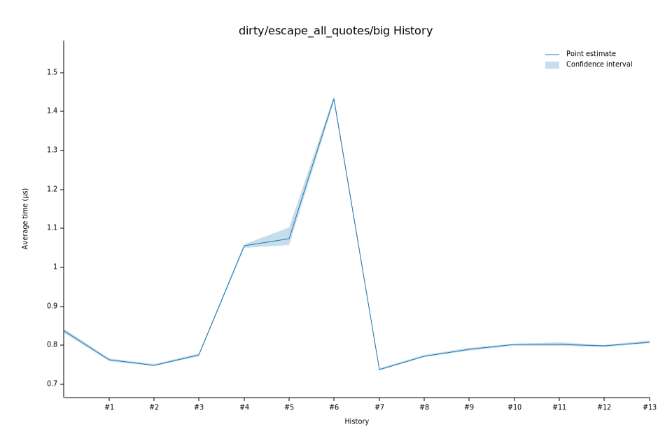

# 42023-01-13T17:03:30-08:00
|
Lower Bound |
Estimate |
Upper Bound |
| Value: |
1.05µs |
1.06µs |
1.06µs |
| Throughput: |
280.39MiB/s |
279.23MiB/s |
278.14MiB/s |
| Change in Value: |
+34.382% |
+35.863% |
+37.055% |
| Change in Throughput: |
-25.585% |
-26.396% |
-27.037% |
No change in performance detected.
# 32023-01-13T17:00:04-08:00
|
Lower Bound |
Estimate |
Upper Bound |
| Value: |
0.77µs |
0.78µs |
0.78µs |
| Throughput: |
381.32MiB/s |
379.80MiB/s |
378.29MiB/s |
| Change in Value: |
+2.3363% |
+3.5469% |
+4.7178% |
| Change in Throughput: |
-2.2830% |
-3.4254% |
-4.5053% |
No change in performance detected.
# 22023-01-13T16:58:04-08:00
|
Lower Bound |
Estimate |
Upper Bound |
| Value: |
0.75µs |
0.75µs |
0.75µs |
| Throughput: |
395.04MiB/s |
393.43MiB/s |
391.54MiB/s |
| Change in Value: |
-3.6208% |
-2.5726% |
-1.5082% |
| Change in Throughput: |
+3.7568% |
+2.6405% |
+1.5313% |
No change in performance detected.
# 12023-01-13T16:56:05-08:00
|
Lower Bound |
Estimate |
Upper Bound |
| Value: |
0.76µs |
0.76µs |
0.77µs |
| Throughput: |
387.70MiB/s |
386.12MiB/s |
384.38MiB/s |
| Change in Value: |
-9.9095% |
-8.8933% |
-7.8740% |
| Change in Throughput: |
+10.999% |
+9.7614% |
+8.5470% |
No change in performance detected.
# 02023-01-13T16:54:06-08:00
|
Lower Bound |
Estimate |
Upper Bound |
| Value: |
0.83µs |
0.84µs |
0.84µs |
| Throughput: |
354.43MiB/s |
352.37MiB/s |
349.73MiB/s |